Электромагнитная плазменная пушка
1. Теория
На элемент dl проводника с током I, помещенного в магнитное поле с индукцией B, действует сила Ампера dF [5]:
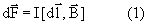
Если направление проводника с током перпендикулярно направлению магнитного поля, то:
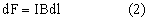
При этом направление действия силы перпендикулярно как к направлению магнитного поля, так и к направлению проводника (определяется правилом левой руки).
По второму закону Ньютона:
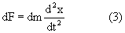
где dm – масса элемента проводника длиной dl, d2x/dt2 – его ускорение.
Из (2) и (3), выражая массу через плотность и объем, получаем:
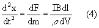
где r – плотность материала, из которого сделан проводник, dV – элемент объема.
Если в качестве проводника используется проволока диаметром d, то:
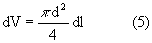
Подставляя (5) в (4) получаем:
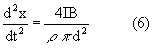
Если разгон проволоки производится на некотором расстоянии X, то, предполагая магнитное поле однородным (B = const) и силу тока I постоянной, получаем достижимую скорость:
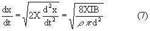
Пусть I = 1000 А, B = 3 Тл, X = 0.03 м (3 см), d = 0.0005 м (0.5 мм), r = 8960 кг/м3 (медь). Тогда dx/dt = 320 м/сек. Если диаметр проволоки уменьшить вдвое (0.25 мм), то достижимая скорость увеличится вдвое и составит 640 м/сек.
Если проволока в течение действия импульса тока успевает испариться за счет теплового действия тока, то в результате можно получить облако плазмы, движущейся со скоростью, превышающей скорость звука в воздухе и сравнимой со скоростью полета пуль огнестрельного оружия.
Необходимую для плавления проволоки амплитуду и длительность синусоидального импульса тока можно рассчитать с помощью программы dTWire [1].
2. Техническая реализация простой электромагнитной плазменной пушки (ЭМП)
Для проверки изложенных в п. 1 рассуждений была изготовлена простая ЭМП с магнитной системой на основе постоянных самарий-кобальтовых магнитов, эскиз которой приведен на рис. 1.
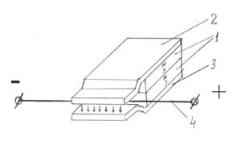
Рис. 1. Конструкция магнитной системы простой электромагнитной
плазменной пушки:
1 - постоянные магниты (2 шт. Sm-Co П20х20х4)
2 - верхняя стальная пластина (сталь Ст3 толщиной 2 мм)
3 - нижняя стальная пластина (сталь Ст3 толщиной 2 мм)
4 - проволока (снаряд) (размещена в зазоре магнитной системы, закреплена в
зажимах, которые одновременно служат токоподводами)
Между двумя стальными пластинами (2, 3) установлены постоянные магниты (1). Величина индукции в зазоре магнитной системы около 0.25 Тл. Направление поля показано стрелками. В зазоре между пластинами закрепляется (с помощью зажимов) проволока, играющая роль снаряда. Перед пушкой устанавливается мишень. Внешний вид пушки в сборе показан на рис. 2.
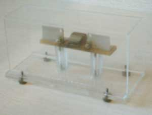
Рис. 2. Внешний вид простой электромагнитной плазменной пушки.
Магнитная система установлена на текстолитовой панели, которая с помощью изолирующих втулок крепится к основанию из оргстекла. Сверху устройство в целях безопасности закрывается кожухом из оргстекла.
Проволока закрепляется с помощью зажимов в зазоре магнитной системы и подключается через реакторную катушку к генератору мощных импульсов тока [2 - 4]. Полярность подключения должна обеспечивать выброс снаряда в сторону мишени. Реактор служит, во-первых, для ограничения амплитуды тока и, во-вторых, для поддержания тока в цепи (за счет самоиндукции), когда проволока начинает плавиться (искровой и дуговой разряд). Внешний вид установки показан на рис. 3.
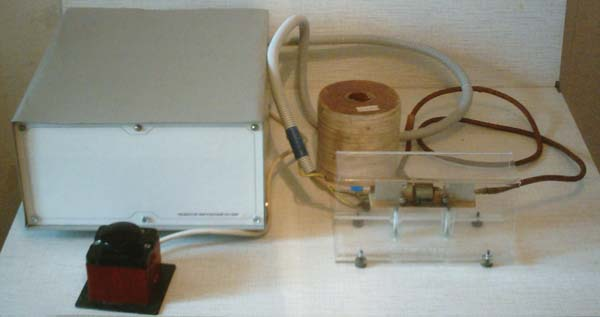
Рис. 3. Простая электромагнитная плазменная пушка с однополярным генератором мощных импульсов тока и реактором.
3. Результаты
При подаче импульса тока через проволоку происходит яркая световая вспышка и резкий хлопок ("удар кнута"). Часть проволоки в расплавленном состоянии и часть в газообразном состоянии выбрасывается в сторону мишени. Результат воздействия меди на оргстекло (полиметилметакрилат) показан на рис. 4, меди на стекло - на рис. 5.
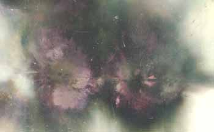
Рис. 4. Результат действия ЭМП: снаряд - медная проволока, мишень - оргстекло.
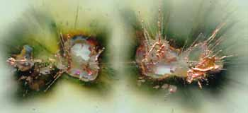
Рис. 5. Результат действия ЭМП: снаряд - медная проволока, мишень - стекло.
4. Выводы
Несмотря на небольшую величину магнитной индукции в зазоре магнитной системы простой ЭМП, работа пушки подтверждает сделанные расчеты. Выброс паров металла действительно происходит в заданном направлении. Скорость выброса достаточно большая. Прочность металлического покрытия стекла или полиэтилена такова, что его трудно стереть вручную с помощью ваты или ткани. При использовании в качестве мишени стеклянной пластинки происходит выбивание мелких кусочков стекла.
В дальнейшем предполагается построить ЭМП с более мощной магнитной системой (индукция до 3 Тл), объединенной с реактором, и опробовать разные режимы подачи импульсов тока.
Ссылки:
10.10.2003
20.09.2005
17.11.2005
15.05.2008
Альтернативные источники
энергии
Компьютеры и
Интернет
Магнитные поля
Механотронные системы
Перспективные разработки
Электроника и
технология